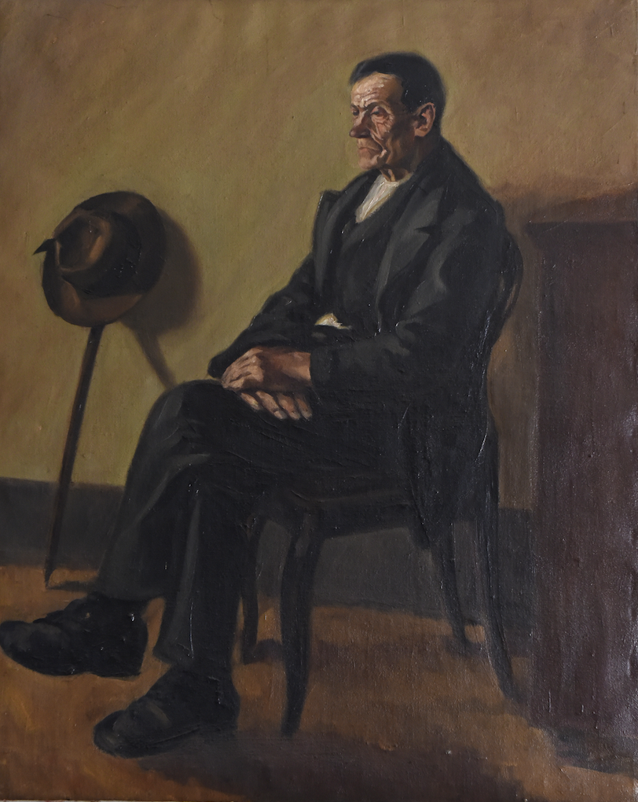
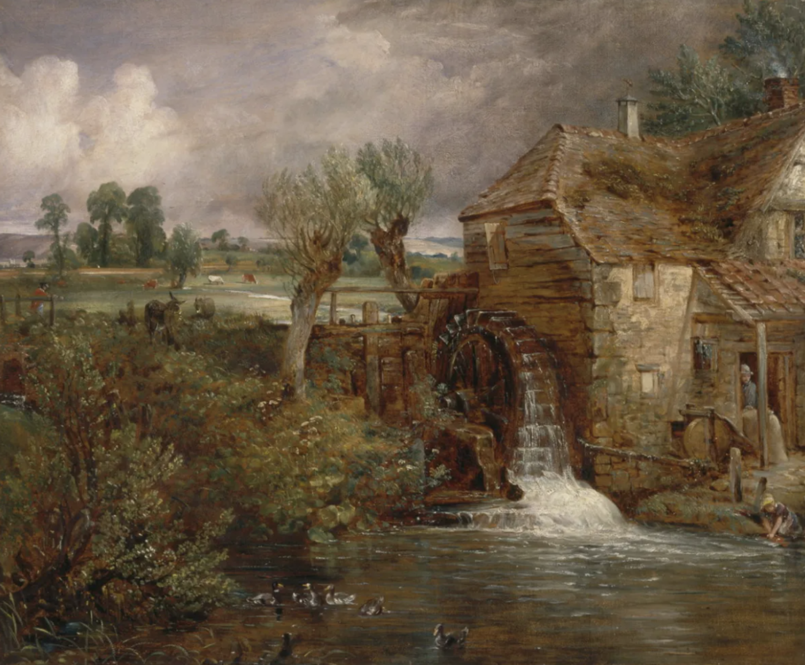

Aktualni dogodki

Fotografije: Tatjana Splichal in Urška Einhauer
Datum dogodka: Odprtje razstave: ponedeljek, 8. 9. 2025; ogled do konca oktobra 2025
Ura dogodka: Odprtje razstave ob 17. uri; ogled razstave ob nedeljah od 16. do 18. ure
Lokacija dogodka: Galerija C’ngrobsk turn, cerkev Marijinega oznanjenja v Crngrobu
Starodavna Koširjeva domačija pod Kamnitim mostom v Škofji Loki spada med najbolj prepoznavne vedute srednjeveškega mesta. Še v šestdesetih letih 20. stoletja je na tem mestu obratoval Koširjev mlin, ki ga pisni viri omenjajo že leta 1309. Fotografinji Tatjana Splichal in Urška Einhauer sta se sprehodili skozi skrite kotičke te častitljive domačije in v objektiv za trajen spomin ujeli številne zanimive poglede ter arhitekturne znamenitosti te dragocene dediščine našega kraja. Izbor njunih fotografij bo prikazan na fotografski razstavi.
Organizacija: Zavod sv. Jurija Stara Loka,
Andrej Megušar – Koširjev mlin, Župnija Stara Loka

Naslov: Kamni, zgodbe in čas: Mlini na Slovenskem – ujeti odsevi obnovljenih domačij
Datum dogodka: 4. oktober 2025 ob 20. uri
Lokacija dogodka: Jurjeva dvorana, Stara Loka
V dolini rek Selške in Poljanske Sore, kjer leži staro mesto Loka, ki so mu gospodovali freisinški gospodje, so bili postavljeni številni mlini, ki jih je poganjala voda bistrih rek. Že od nekdaj so ljudje tam mleli žito v moko in brez mlina ni bilo hiše, ki bi imela kruh. Tako so mlini na Loškem več stoletij mleli dan in noč, dokler niso prišli novi časi, nove naprave in moč elektrike, ki je vodni pogon nadomestila.
Na pogovornem večeru bomo odkrivali pomen mlinarstva kot ene ključnih gospodarskih dejavnosti na Slovenskem skozi stoletja. Spoznali bomo, da mlinarstvo kot rokodelska dediščina predstavlja del tradicionalnega tehničnega znanja, ki danes izginja, a ga je vredno ohranjati kot del tehnološke zgodovine. Mlinarska dediščina odseva kulturno identiteto kraja ter prispeva arhitekturno in krajinsko vrednost okolju. Srečali se bomo z obnovljenimi mlinarskimi domačijami na Slovenskem, ki danes služijo kot reprezentativne mlinarske učne poti in so del kulturnega turizma.
Organizacija: Zavod sv. Jurija Stara Loka,
Andrej Megušar – Koširjev mlin, Župnija Stara Loka